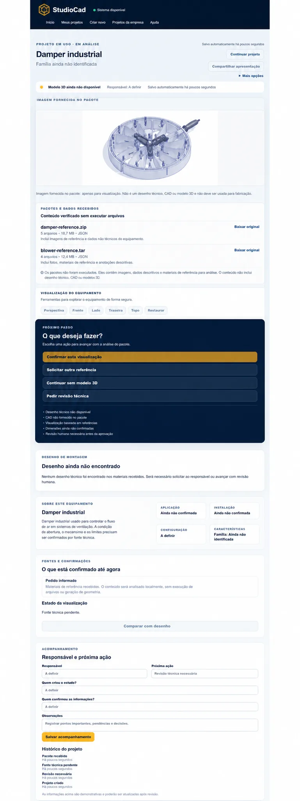

HUMAN REVIEW
The visual flow makes the review step explicit before a technical decision.
ProjectReferenceReviewDecision
CASE / STUDIOCAD
INTERNAL USEAI applied to industrial projects
Private visual workstation used daily by the manager and two designers to locate projects, view CAD files and produce AI-assisted visual studies.

VISUAL EVIDENCE
The visual flow makes the review step explicit before a technical decision.
The public copy preserves the journey and removes technical files, network paths and commercial information.
What this gallery shows
The selection prioritizes real screens, sanitized copies or declared technical flows, always with context indicated in the caption.
Public limit
Operational data, credentials, private integrations and client information are not part of this publication.
Heterogeneous technical packages, compressed files and multiple formats required a safe inspection, conversion and presentation flow.
Architecture, secure ingestion, CAD pipeline, model integration, fallbacks, traceability, UX and human approval.
FreeCAD, Blender and Assimp with fallback; local/remote AI through Ollama, Hermes and OpenRouter; hashes, manifests and suspicious-package blocking.
What this case does not show
CAD files, NAS integration and the complete operational pipeline remain private.
If the operation grew
I would isolate conversions in sandboxed workers, create a model/version registry, quality evaluation, processing queues and project-based permissions.
Public evidence contains no credentials, personal data or sensitive internal information.